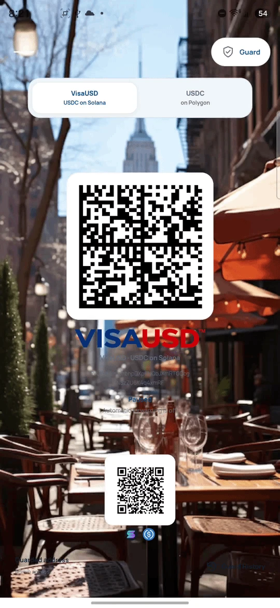
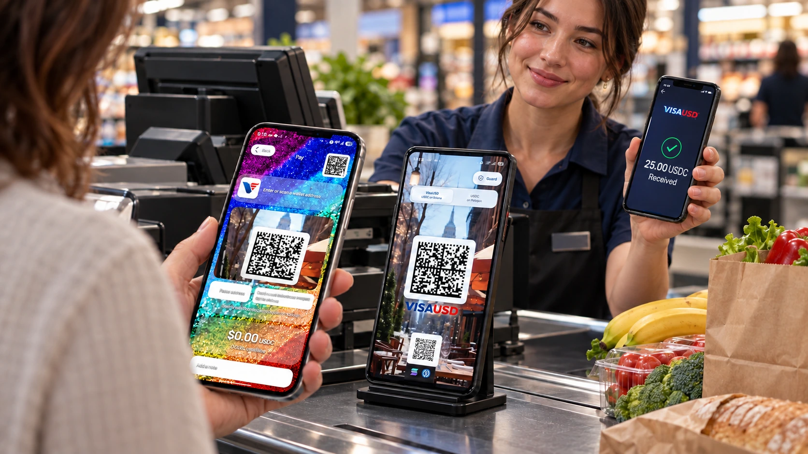
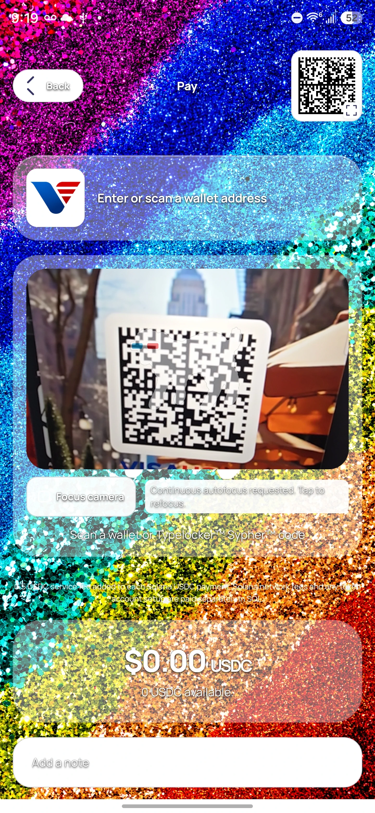

DUALSCAN / CHECKOUT SOLUTIONS
Open a new
payment lane.
USDC at the counter.
Your merchant wallet behind it.
A dedicated Android payment screen that receives USDC and automatically forwards it to your separate merchant vault.

A new way to receive.
A familiar place to settle.
A CLEAR PATH / 01
The counter.
Reconsidered.
Face the payment screen toward the customer. Keep the merchant’s receiving wallet on a separate device facing the cashier.

- 01
The customer pays.
Scan the displayed payment code with a compatible wallet and send USDC on the selected network.
- 02
The Gate receives.
VisaUSD PoS detects supported, confirmed incoming USDC while the app is open and unlocked.
- 03
Your vault settles.
The Gate forwards the net USDC to your saved merchant destination and automatically processes any applicable fee.
- 04
Record the sale.
Verify receipt in the merchant vault, then use Other, Check, or a custom VisaUSD payment type where your register supports it.
VisaUSD PoS operates alongside your register. It has no direct Square integration, and no Square endorsement is implied. Register options vary by provider and configuration.
TWO NETWORKS / ONE COUNTER
Their choice.
Your checkout.
Start with VisaUSD on Solana. Offer USDC on Polygon as a second payment lane.
Mode preview. The app’s optional Show Payment Selector setting lets customers choose a payment side.
USDC on Solana.
VisaUSD mode uses USDC on Solana. Its main Data Matrix code is designed for the Dualscan VisaUSD Wallet.
- Payment asset
- USDC
- Network gas
- SOL
- Main payment code
- VisaUSD Data Matrix
- External wallets
- Use the small footer QR
Both enabled networks keep processing while the app is foregrounded and unlocked—even when only one payment side is displayed.
SIMPLE SERVICE FEES / 02
Small payment.
Clear numbers.
The same USDC service-fee rule on both networks. The fee is deducted from the incoming payment; native network gas and any sender-wallet charges are separate.
No USDC service fee.
A flat fee, automatically routed.
- Customer sends
- 25.00 USDC
- Service fee
- −0.50 USDC
- Your vault receives
- 24.50 USDC
Illustrative payment. The Gate also needs sufficient SOL or POL to pay network costs.
Solana: the vault payout and service fee share one atomic transaction. Polygon: the net payout confirms first, followed by the automatic fee transfer.

FROM A COUNTER TO A CHECKOUT LANE
Made to face
the customer.
A focused payment display for cafés, independent retailers, and supermarket checkout evaluations.
- PIN or supported biometrics protect admin access and Guard History.
- With Keep screen on enabled, the Android display stays awake while foregrounded.
- An enabled checkout stays unlocked while foregrounded. Backgrounding pauses processing; use Lock to end the unlocked session.
- Background art, text color, and card transparency apply across both payment sides.
Use Android app pinning where appropriate. Merchant deployment still requires a funded acceptance test and your own checkout procedures.
PREPARE THE LANE / 03
Set up once.
Run with intention.
- 01
Choose the merchant destination.
Select a payment network and enter your merchant vault address before creating a 4-digit PIN. Address-format checks help catch broken entries.
- 02
Secure the admin controls.
Set your PIN and, if desired, enable supported device biometrics. Admin tray access and Guard History require authentication.
- 03
Fund through Admin Deposit.
Initial eligibility requires at least 1 USDC or $1 worth of SOL or POL. Fund actual native gas through the selected network’s Admin Deposit window. USDC is a payment asset, not gas, and does not trigger the native-deposit completion indicator.
- 04
Enable. Test. Open the lane.
Select Enable forwarding separately for each network you plan to use. Test a real payment and verify the vault receipt and fee before customer use.
What does a green Guard status mean?
A balance worth at least $1 in USDC or the selected native currency can satisfy the initial funding status. Forwarding still requires enough native SOL or POL for network costs. Green status is not a payment-settlement confirmation.
When the native gas balance falls below approximately $0.10, forwarding pauses for a refill of at least $1. Use Admin Deposit to fund gas. Check the merchant vault to confirm a sale.
What if a customer sends SOL or POL instead of USDC?
Send USDC for purchases. An eligible, verified direct native SOL or POL payment outside an admin deposit window may be returned to its original sender: 20% is routed as a service fee, and network costs are deducted from the 80% return portion.
This is not an unconditional refund guarantee. Unsupported or unattributable transfers, dust, ambiguous transactions, and interrupted deposit-window activity can be held for review. Native funding received in an open Admin Deposit window is retained. Some internal Polygon contract credits may not be detected at all, so no automatic return is promised for them.
Native returns run only while that network’s forwarding is enabled and the app is foregrounded and unlocked. Eligible payments recorded while paused stay queued for processing after re-enabling. A custodial or exchange payment returns to the on-chain sender address and may not automatically credit the individual customer.
When does automatic forwarding stop?
The app must remain foregrounded and unlocked, with forwarding enabled and sufficient network gas. Backgrounding or manually locking the app stops forwarding. Keep connectivity available and verify receipt in the merchant vault.
Complete network setup before accepting customer payments. Forwarding relies on supported incoming transaction history after the network’s saved initialization checkpoint; it does not sweep every pre-existing token balance.
Does the Gate make my vault private on the blockchain?
Your shared payment code contains the Gate address rather than the merchant vault address. The forwarding transaction still publicly links the Gate and vault on the selected blockchain.
START WITH THE RIGHT WALLET / 04
The right asset.
The right network.
Wallet name alone is not enough. Confirm USDC support on the selected network and use a compatible payment-code format.
| Customer wallet | Payment path | Before paying |
|---|---|---|
| Dualscan VisaUSD WalletOur VisaUSD payment experience | VisaUSD Data Matrix | Use the VisaUSD / USDC Solana side. |
| Trust Wallet | Standard address QR | Native USDC on Solana or Polygon. Official support ↗ |
| MetaMask | Standard address QR | Native Solana and Polygon support. Choose USDC on the matching network. Solana support ↗ |
| Coinbase Wallet / Base | Standard address QR | USDC on Solana or Polygon; Solana may need enabling. USDC on the Base network is not accepted here. Official support ↗ |
| Cash App | Standard address QR | USDC on Solana or Polygon for eligible customers; unavailable to New York residents. Eligibility ↗ |
Documented network support is not a funded interoperability test or endorsement. Use native USDC; bridged USDC.e and the Base network are not accepted. External-wallet QR handling varies by app and version. Verify the resolved address, network, token, and amount before confirming. On the Solana side, compatible external wallets use the small standard address QR at the bottom, beside the SOL / USDC icons. The VisaUSD Data Matrix is not a universal external-wallet QR.
THE CUSTOMER’S VIEW
Open. Scan.
Confirm the payment.
The customer opens Pay in the Dualscan VisaUSD Wallet and scans the Gate’s main Data Matrix. They check the destination, USDC network, and amount before confirming.
Actual supplied Android wallet capture. Customer-wallet fees and network costs may apply separately from the PoS service fee.
Explore the VisaUSD Wallet
THE NEXT STEP / VISAUSD PoS 1.0.2
Put a new lane
on your counter.
Install the Android app. Follow the administrator manual. Validate your complete checkout with a funded test.
ANDROID APK · VERSION 1.0.2Your administrator
setup manual.
First setup, gas funding, security, daily operations, and payment verification.
Open PDF Download PDF Download Word documentRelease validation: installed-build checks completed. A funded end-to-end acceptance test is required before unattended merchant use.